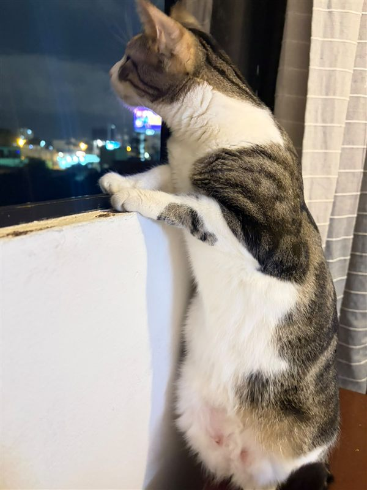

Hoy
¿Cuántas cosas vas a hacer hoy?
Ahora toca
Pregunta del momento 🧠
La hora es opcional. Si le pones una, te aviso 10 minutos antes y a la hora.
Lista de hoy
Tu semana 📊
Ajustes
Tu foto
Avisos permitidos entre
y
Los avisos funcionan mientras esta página esté abierta, aunque esté minimizada. Los empujoncitos respetan el horario de avisos que elijas.